Префектура Яманаси · Хокуто · где остановиться
Дом в лесу у Яцугатакэ: осень с шеф-поваром в домике SANU
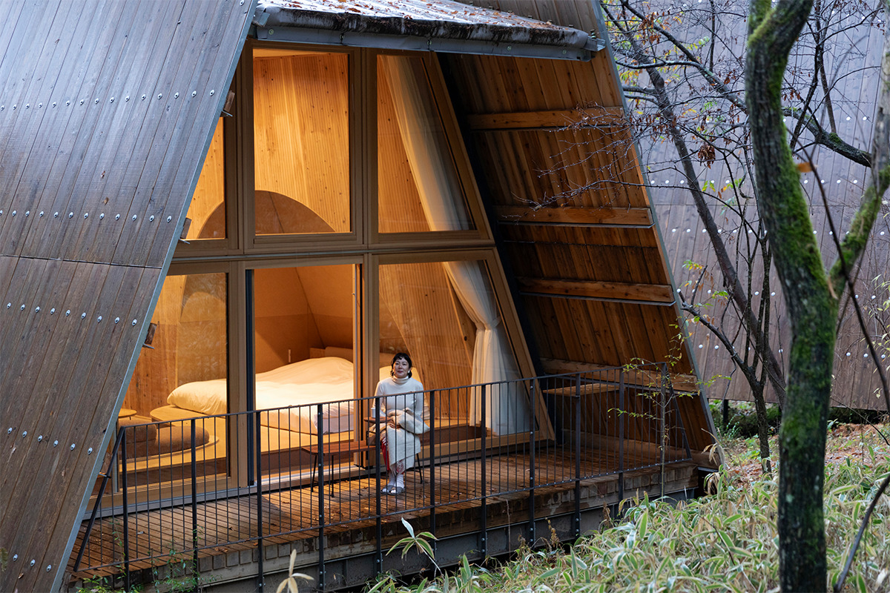
Где-то в лесу, в паре часов от Токио, стоит дом, в который можно приезжать снова и снова. Осенью 2023 года в таком домике у подножия Яцугатакэ поселилась шеф-повар и основательница кулинарного проекта eatrip, чтобы готовить из того, что выросло рядом.
Дом
Второй дом в лесу
SANU 2nd Home задуман как «второй дом на природе». Домики компании стоят в местах, до которых от столицы ехать от часа до трёх, и в 2023 году их было 13 площадок и 76 домиков. Сервис устроен как подписка: выбираешь место под настроение и живёшь там, как у себя. В 2026 году без подписки можно забронировать и одну ночь через сайт SANU или крупные системы бронирования.
Героиня этой поездки шеф-повар, которая открыла в Токио ресторан eatrip в 2012 году и магазин eatrip soil в 2019-м. Она устраивает кейтеринг, работает с журналами и радио, придумывает мероприятия, а в одной из своих книг рассказывает детям, как ценны продукты и как весело готовить. Для отдыха она выбрала Яцугатакэ, горный массив на границе префектур Яманаси и Нагано, и площадку SANU 2nd Home Yatsugatake 2nd на южных склонах в городе Хокуто.
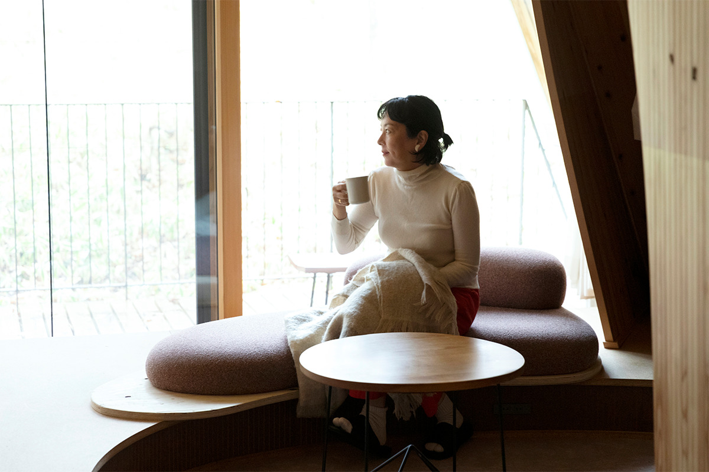
Осенью дорога к Яцугатакэ проходит сквозь яркие клёны, а иногда всё затягивает туман. Крыша домика сделана из японского дерева и похожа на трапецию, одна стена целиком стеклянная, и за ней видны горы. С широкой террасы шагаешь прямо в лес, а внутри греет печка.
«Яцугатакэ это земля людей, на которых держится еда: фермеров, которые хотят вести хозяйство без ущерба для земли, птичников, виноделов, тех, кто растит оливы и давит из них масло. Сюда переехало много молодых, влюблённых в здешнюю природу, они знакомы друг с другом, и место стало по-настоящему интересным»
шеф-повар
Сыр и вино
Лавка montara
Отдохнув, шеф-повар отправилась за продуктами. На южном склоне Яцугатакэ, в посёлке Таканэ, работает лавка натурального сыра и вина montara. Её хозяин переехал сюда примерно за десять лет до 2023 года и открыл магазин прямо в прихожей своего дома с земляным полом. Место знают немногие, но кто знает, возвращается: и сыр, и вино, и сушёные фрукты здесь только от производителей, которых хозяин знает лично. Общего у них нашлось много, и через несколько минут шеф-повар и хозяин болтали как старые знакомые.
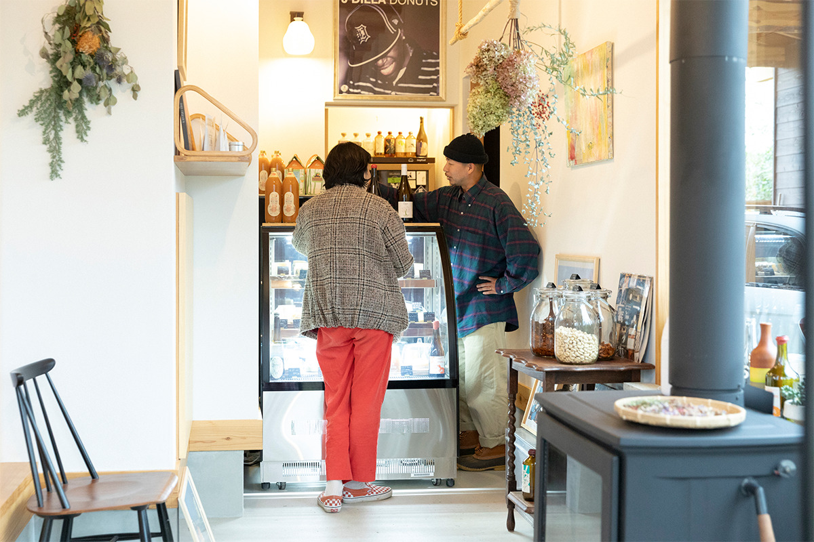
По совету хозяина она взяла красное вино из винограда, выращенного в Яманаси и Нагано. Ягоды везут на винодельню в префектуру Хёго, там вино год выдерживают в амфорах, а после розлива ещё полгода в бутылке. К нему шеф-повар выбрала три сыра.
«Если есть хороший сыр и хорошее вино, вечер уже удался. А если сыр останется, утром его можно положить в омлет»
шеф-повар
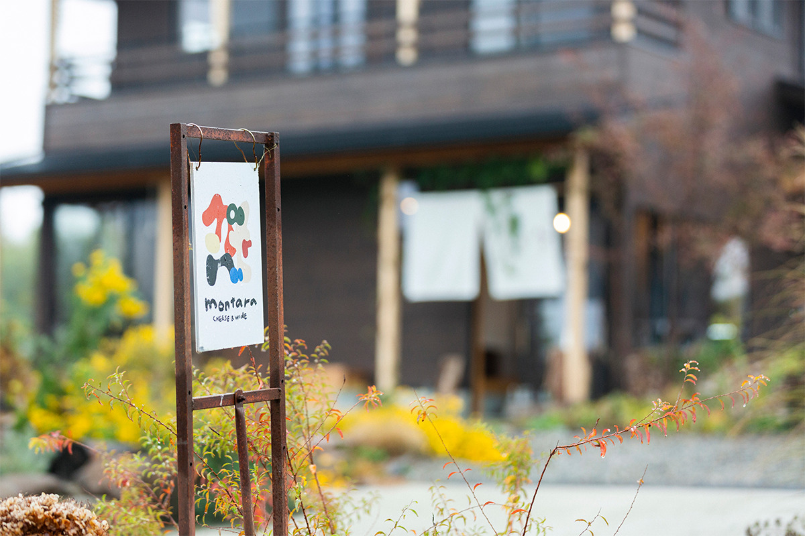
montara
- Адрес
- префектура Яманаси, Хокуто, Таканэ-тё, Ками-Куросава, 1547-7
- Телефон
- +81 90-2157-3598
- Часы работы
- 10:00–17:00
- Выходные
- нерегулярно
Кухня
Готовить всем вместе
С сезонными овощами, хлебом, сыром и вином из окрестных лавок шеф-повар вернулась в домик и сразу встала к плите. Пока она готовила, дети, жёгшие костёр во дворе, один за другим потянулись на кухню. «Можно я сделаю омлет из этих яиц?», спросил маленький повар у сковородки. «Добавь сливочного масла, будет ароматнее», ответила она. Омлет с только что купленной листовой хризантемой и колбасками получился пышным и отправился на стол.
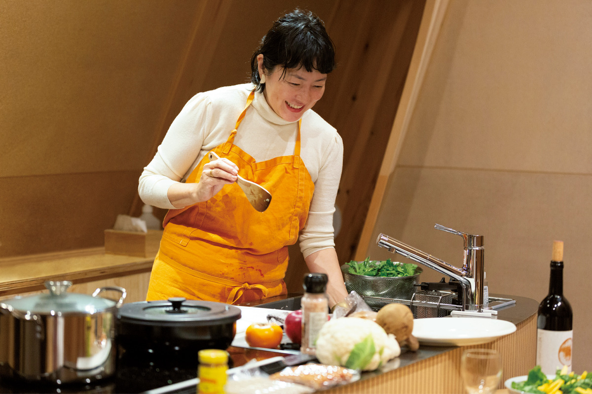
«Здесь кухня совсем рядом со столом. Нет деления на того, кто готовит, и гостей: любой может встать к плите, есть прямо по ходу дела и пить вино»
шеф-повар
В домиках SANU есть посуда, кухонная утварь и основные приправы, поэтому готовить можно так же, как дома. У детей, которые режут и мешают сами, горят глаза.
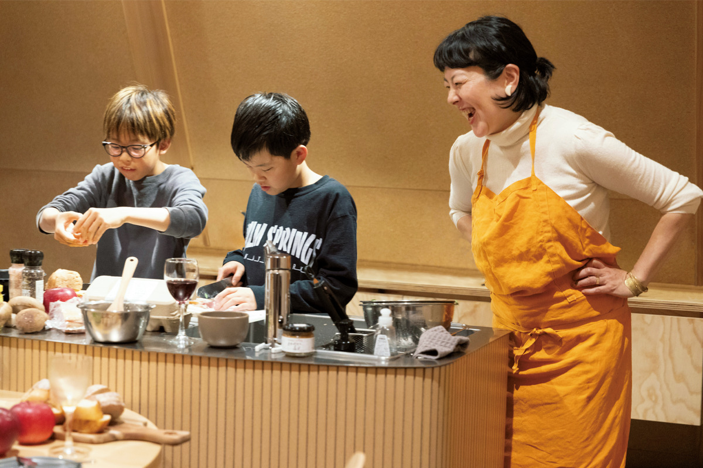
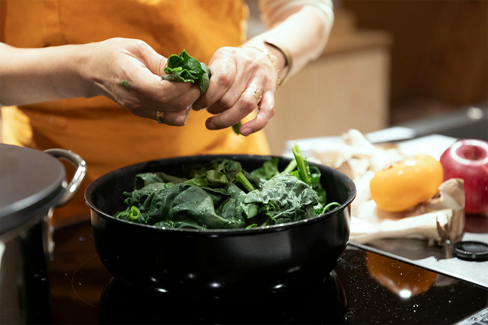
Стол
Простая еда как праздник
В тот вечер на столе были салат из хурмы с хризантемой, руколой и другой свежей зеленью, шпинат с беконом в масле, колбаски с грибами эринги, омлет и сыры из montara с физалисом. Всё готовится за несколько минут.
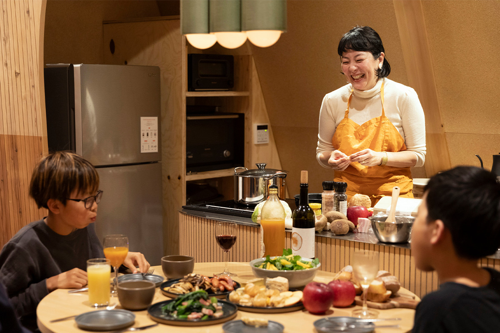
«Лучше всего есть то, что даёт земля в этом месте и в это время года. И по возможности не слишком мудрить»
шеф-повар
Если не бегать по достопримечательностям, а пожить на месте, связь с землёй появляется сама, через еду. В домике посреди леса нарезанное, обжаренное или чуть потушенное трогает сильнее, чем сложные блюда.
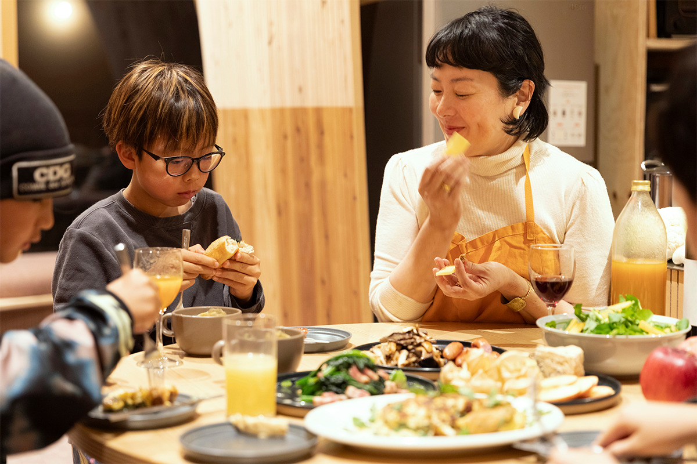
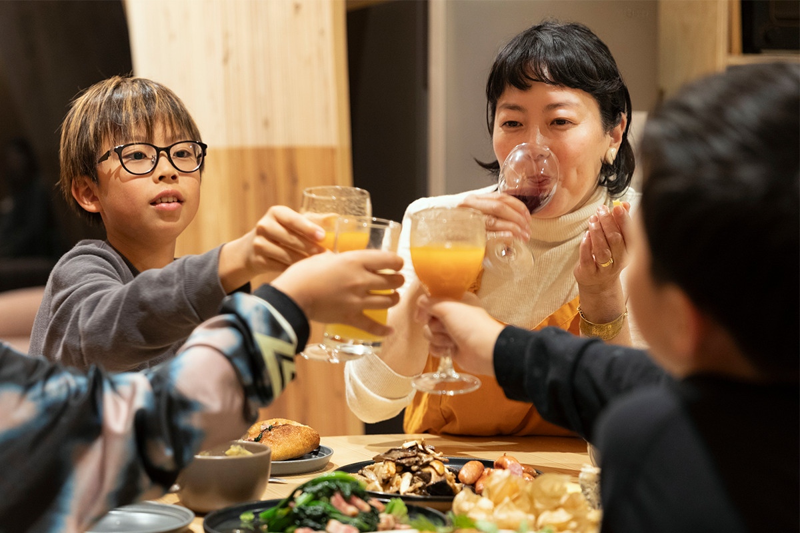
Земля
Узнать место через еду
«На Яцугатакэ я люблю заглядывать в галереи и винодельни, ездить к фермерам, а вечером ужинать в местных ресторанах. Дом стоит прямо в лесу, так что можно готовить и на костре»
шеф-повар
Домики SANU, по её словам, хороши для семьи и близких друзей, без церемоний. Здесь можно и поработать: всё для этого есть.
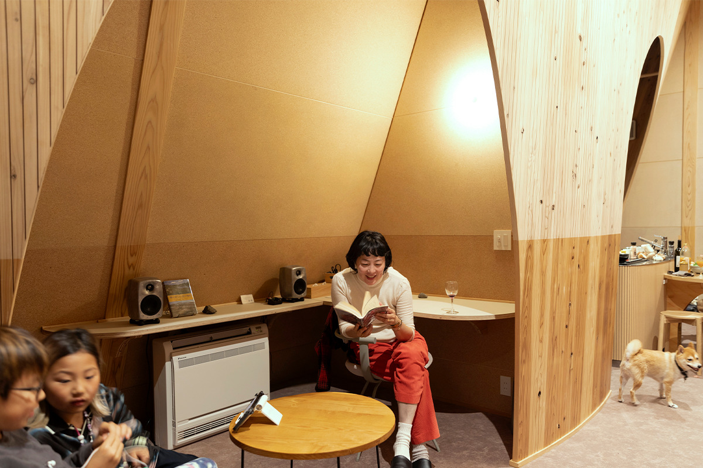
«Детям особенно важно знать, где и как растёт то, что они едят. Мы живём дарами земли и жизнями других существ, и когда переживаешь это вместе, это запоминается гораздо крепче, чем из учебника»
шеф-повар
Если живёшь на месте, а не проезжаешь мимо, начинаешь видеть то, что от торопливого туриста скрыто. А в дом, куда возвращаешься снова, каждый сезон приходит со своими видами и занятиями.
SANU 2nd Home Yatsugatake 2nd
- Адрес
- префектура Яманаси, Хокуто, Оидзуми-тё, Ято, 5771-221
- Как добраться
- около 20 минут на машине от станции Кобутидзава
- Сайт
- sa-nu.com
Фото: Сатиэ Абико.